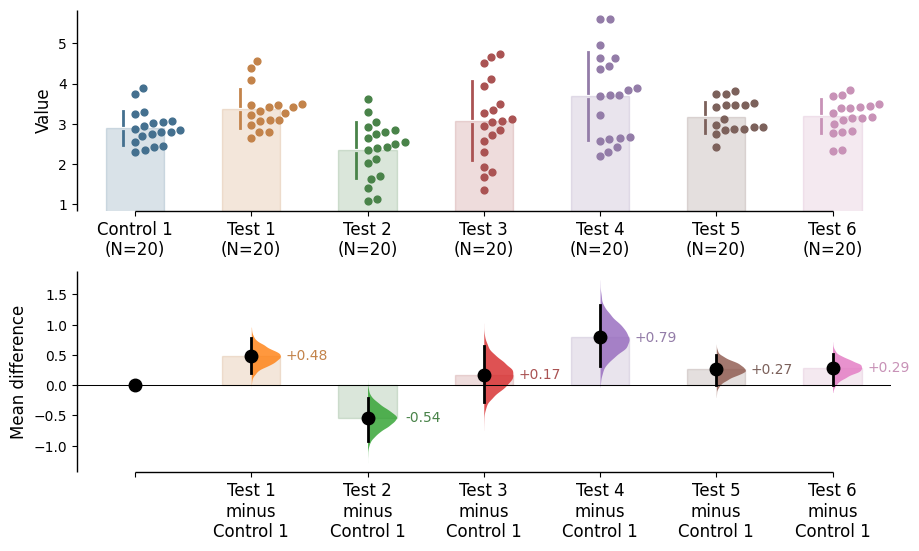
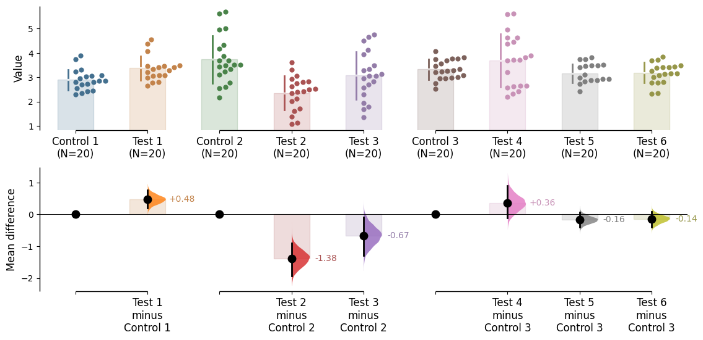
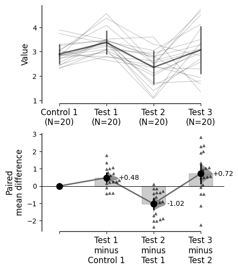

Explanation of how to use dabest for shared control and repeated measures analyses.
The shared control plot and repeated measures plot display common experimental paradigms, where several test samples are compared against a common reference sample. The shared control plot is for unpaired data, while the repeated measures plot is for paired data.
These types of Cumming plots are automatically generated if the tuple passed to idx has more than two data columns.
Load libraries
import numpy as npimport pandas as pdimport dabestprint("We're using DABEST v{}".format(dabest.__version__))
DABEST v2025.10.20
==================
Good afternoon!
The current time is Sun Oct 19 16:00:11 2025.
Effect size(s) with 95% confidence intervals will be computed for:
1. Test 1 minus Control 1
2. Test 2 minus Control 1
3. Test 3 minus Control 1
4. Test 4 minus Control 1
5. Test 5 minus Control 1
6. Test 6 minus Control 1
5000 resamples will be used to generate the effect size bootstraps.
shared_control.mean_diff
DABEST v2025.10.20
==================
Good afternoon!
The current time is Sun Oct 19 16:00:12 2025.
The unpaired mean difference between Control 1 and Test 1 is 0.48 [95%CI 0.205, 0.774].
The p-value of the two-sided permutation t-test is 0.001, calculated for legacy purposes only.
The unpaired mean difference between Control 1 and Test 2 is -0.542 [95%CI -0.915, -0.206].
The p-value of the two-sided permutation t-test is 0.0042, calculated for legacy purposes only.
The unpaired mean difference between Control 1 and Test 3 is 0.174 [95%CI -0.273, 0.647].
The p-value of the two-sided permutation t-test is 0.479, calculated for legacy purposes only.
The unpaired mean difference between Control 1 and Test 4 is 0.79 [95%CI 0.325, 1.33].
The p-value of the two-sided permutation t-test is 0.0042, calculated for legacy purposes only.
The unpaired mean difference between Control 1 and Test 5 is 0.265 [95%CI 0.0115, 0.497].
The p-value of the two-sided permutation t-test is 0.0404, calculated for legacy purposes only.
The unpaired mean difference between Control 1 and Test 6 is 0.288 [95%CI 0.00913, 0.524].
The p-value of the two-sided permutation t-test is 0.0324, calculated for legacy purposes only.
5000 bootstrap samples were taken; the confidence interval is bias-corrected and accelerated.
Any p-value reported is the probability of observing theeffect size (or greater),
assuming the null hypothesis of zero difference is true.
For each p-value, 5000 reshuffles of the control and test labels were performed.
To get the results of all valid statistical tests, use `.mean_diff.statistical_tests`
shared_control.mean_diff.plot();

dabest allows for combining both two-group and shared control experiments into the same plot. This empowers you to perform robust analyses and present complex visualizations of your statistics elegantly.
DABEST v2025.10.20
==================
Good afternoon!
The current time is Sun Oct 19 16:00:12 2025.
Effect size(s) with 95% confidence intervals will be computed for:
1. Test 1 minus Control 1
2. Test 2 minus Control 2
3. Test 3 minus Control 2
4. Test 4 minus Control 3
5. Test 5 minus Control 3
6. Test 6 minus Control 3
5000 resamples will be used to generate the effect size bootstraps.
multi_groups.mean_diff
DABEST v2025.10.20
==================
Good afternoon!
The current time is Sun Oct 19 16:00:13 2025.
The unpaired mean difference between Control 1 and Test 1 is 0.48 [95%CI 0.205, 0.774].
The p-value of the two-sided permutation t-test is 0.001, calculated for legacy purposes only.
The unpaired mean difference between Control 2 and Test 2 is -1.38 [95%CI -1.93, -0.905].
The p-value of the two-sided permutation t-test is 0.0, calculated for legacy purposes only.
The unpaired mean difference between Control 2 and Test 3 is -0.666 [95%CI -1.29, -0.0788].
The p-value of the two-sided permutation t-test is 0.0352, calculated for legacy purposes only.
The unpaired mean difference between Control 3 and Test 4 is 0.362 [95%CI -0.111, 0.901].
The p-value of the two-sided permutation t-test is 0.161, calculated for legacy purposes only.
The unpaired mean difference between Control 3 and Test 5 is -0.164 [95%CI -0.398, 0.0747].
The p-value of the two-sided permutation t-test is 0.208, calculated for legacy purposes only.
The unpaired mean difference between Control 3 and Test 6 is -0.14 [95%CI -0.4, 0.0937].
The p-value of the two-sided permutation t-test is 0.282, calculated for legacy purposes only.
5000 bootstrap samples were taken; the confidence interval is bias-corrected and accelerated.
Any p-value reported is the probability of observing theeffect size (or greater),
assuming the null hypothesis of zero difference is true.
For each p-value, 5000 reshuffles of the control and test labels were performed.
To get the results of all valid statistical tests, use `.mean_diff.statistical_tests`
multi_groups.mean_diff.plot();

Repeated measures plot
DABEST v2023.02.14 expands the repertoire of plots for experiments with repeated-measures designs. DABEST now allows the visualization of paired experiments with one control and multiple test groups, as well as repeated measurements of the same group. This is an improved version of paired data plotting in previous versions, which only supported computations involving one test group and one control group.
The repeated-measures function supports the calculation of effect sizes for paired data, either based on sequential comparisons (group i vs group i + 1) or baseline comparisons (control vs group i). To use these features, you can simply declare the argument paired = "sequential" or paired = "baseline" correspondingly while running dabest.load(). As in the previous version, you must also pass a column in the dataset that indicates the identity of each observation, using the id_col keyword.
(Please note thatpaired = Trueandpaired = Falseare no longer valid since v2023.02.14)
DABEST v2025.10.20
==================
Good afternoon!
The current time is Sun Oct 19 16:00:13 2025.
Paired effect size(s) for repeated measures against baseline
with 95% confidence intervals will be computed for:
1. Test 1 minus Control 1
2. Test 2 minus Control 1
3. Test 3 minus Control 1
5000 resamples will be used to generate the effect size bootstraps.
baseline_repeated_measures.mean_diff
DABEST v2025.10.20
==================
Good afternoon!
The current time is Sun Oct 19 16:00:14 2025.
The paired mean difference for repeated measures against baseline
between Control 1 and Test 1 is 0.48 [95%CI 0.241, 0.749].
The p-value of the two-sided permutation t-test is 0.001, calculated for legacy purposes only.
The paired mean difference for repeated measures against baseline
between Control 1 and Test 2 is -0.542 [95%CI -0.977, -0.179].
The p-value of the two-sided permutation t-test is 0.014, calculated for legacy purposes only.
The paired mean difference for repeated measures against baseline
between Control 1 and Test 3 is 0.174 [95%CI -0.303, 0.702].
The p-value of the two-sided permutation t-test is 0.505, calculated for legacy purposes only.
5000 bootstrap samples were taken; the confidence interval is bias-corrected and accelerated.
Any p-value reported is the probability of observing theeffect size (or greater),
assuming the null hypothesis of zero difference is true.
For each p-value, 5000 reshuffles of the control and test labels were performed.
To get the results of all valid statistical tests, use `.mean_diff.statistical_tests`
DABEST v2025.10.20
==================
Good afternoon!
The current time is Sun Oct 19 16:00:14 2025.
Paired effect size(s) for the sequential design of repeated-measures experiment
with 95% confidence intervals will be computed for:
1. Test 1 minus Control 1
2. Test 2 minus Test 1
3. Test 3 minus Test 2
5000 resamples will be used to generate the effect size bootstraps.
sequential_repeated_measures.mean_diff
DABEST v2025.10.20
==================
Good afternoon!
The current time is Sun Oct 19 16:00:15 2025.
The paired mean difference for the sequential design of repeated-measures experiment
between Control 1 and Test 1 is 0.48 [95%CI 0.241, 0.749].
The p-value of the two-sided permutation t-test is 0.001, calculated for legacy purposes only.
The paired mean difference for the sequential design of repeated-measures experiment
between Test 1 and Test 2 is -1.02 [95%CI -1.35, -0.709].
The p-value of the two-sided permutation t-test is 0.0, calculated for legacy purposes only.
The paired mean difference for the sequential design of repeated-measures experiment
between Test 2 and Test 3 is 0.716 [95%CI 0.153, 1.2].
The p-value of the two-sided permutation t-test is 0.022, calculated for legacy purposes only.
5000 bootstrap samples were taken; the confidence interval is bias-corrected and accelerated.
Any p-value reported is the probability of observing theeffect size (or greater),
assuming the null hypothesis of zero difference is true.
For each p-value, 5000 reshuffles of the control and test labels were performed.
To get the results of all valid statistical tests, use `.mean_diff.statistical_tests`
sequential_repeated_measures.mean_diff.plot();

Similar to unpaired data, DABEST empowers you to perform complex visualizations and statistics for paired data.